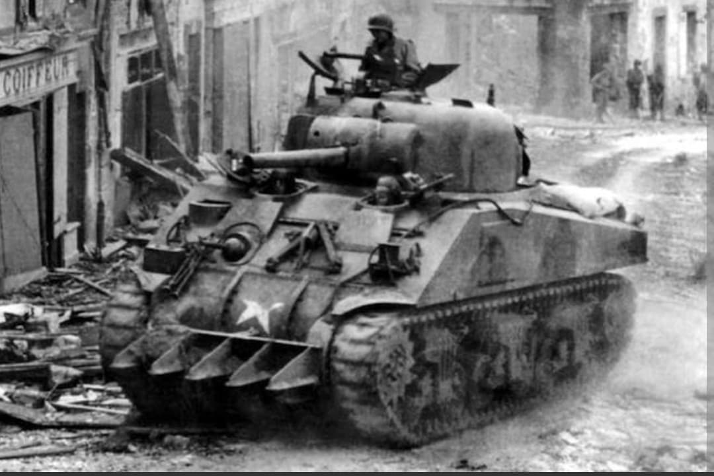
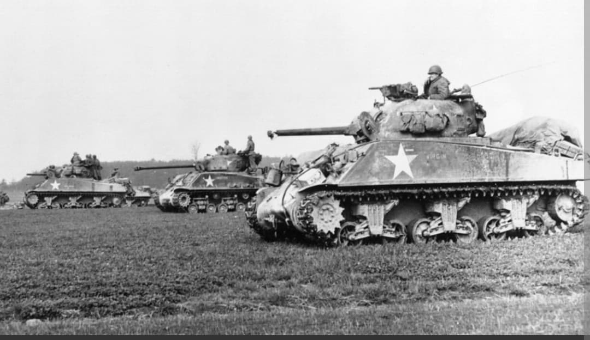
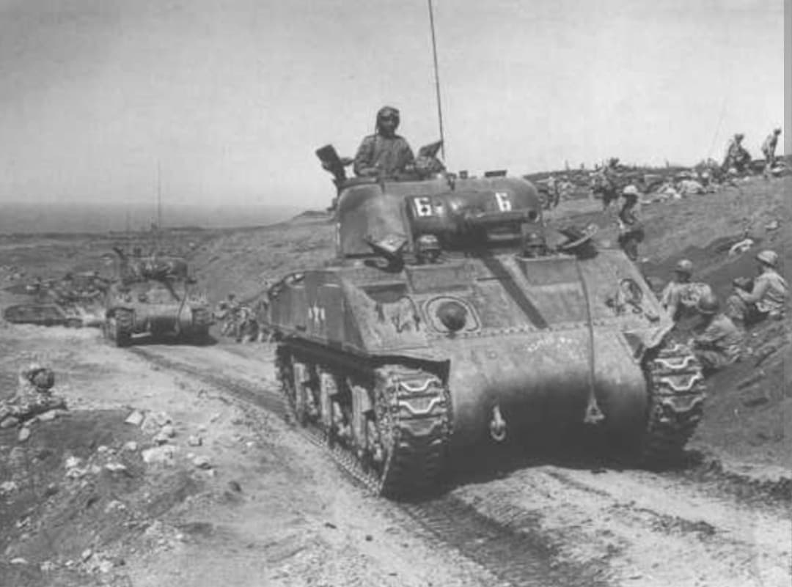

Le pilier de la force blindée alliée et le symbole de la puissance industrielle américaine

Le Char moyen M4 Sherman est le blindé le plus emblématique et le plus largement produit par les États-Unis durant la Seconde Guerre mondiale.
Conçu pour être fabriqué en très grande série, facilement transportable par navire et simple à entretenir sur le terrain, le Sherman a équipé non seulement l'US Army et le US Marine Corps, mais également l'ensemble des nations alliées (Grande-Bretagne, France libre, URSS, Canada) grâce au programme Prêt-Bail.
Développé en 1941 pour remplacer le char transitoire M3 Lee, le M4 Sherman adoptait une tourelle entièrement rotative et une conception modulaire. Selon les sous-variantes (M4, M4A1 à coque moulée, M4A2 diesel, M4A3 avec moteur Ford V8), sa masse oscillait entre **30 et 33 tonnes**.
Armé initialement du canon de **75 mm M3** (efficace contre l'infanterie et les blindés légers), il fut ultérieurement réarmé du puissant canon de **76 mm M1** à haute vitesse initiale et, dans sa version britannique **Firefly**, du redoutable canon de 17 livres capable de percer le blindage frontal des chars lourds allemands. Sa défense secondaire reposait sur une mitrailleuse coaxiale M1919 de 7,62 mm et une mitrailleuse lourde **Browning .50 cal (12,7 mm)** sur la tourelle.

Le M4 Sherman effectua ses débuts opérationnels majeurs sous les couleurs britanniques lors de la **seconde bataille d'El-Alamein** à la fin de l'année 1942, où sa supériorité sur les Panzer III et IV rééquilibra le rapport de force en Afrique du Nord.
Il participa ensuite à toutes les grandes opérations alliées : campagnes d'Italie, débarquement de Normandie, libération de la France, bataille des Ardennes et opérations dans les îles du Pacifique. Bien que surclassé en duel singulier à longue distance par les chars lourds allemands Tiger I et Panther, le Sherman compensait par sa fiabilité mécanique, sa vitesse de rotation de tourelle, la supériorité numérique et un soutien logistique sans équivalent.

Produit à près de **50 000 exemplaires** entre 1942 et 1945, le Sherman détient le record du char le plus produit de la Seconde Guerre mondiale derrière le T-34 soviétique.
Son châssis adaptable donna naissance à une multitude de versions spécialisées : le tankdozer avec lame de bulldozer, le DD (*Duplex Drive*) amphibie pour le jour J, le lance-flammes *Zippo*, le lance-roquettes *Calliope*, ainsi que les chasseurs de chars M10 Wolverine et M36 Jackson.
Page du Musée HOP WW2 – Section Véhicules Terrestres Américains